DAS IST MEINE MEINUNG:
Heute von Christoph RichterRegeln, Regeln, Regeln ...
... unser Leben ist voller Regeln.
Muss man denn wirklich ALLES regeln?
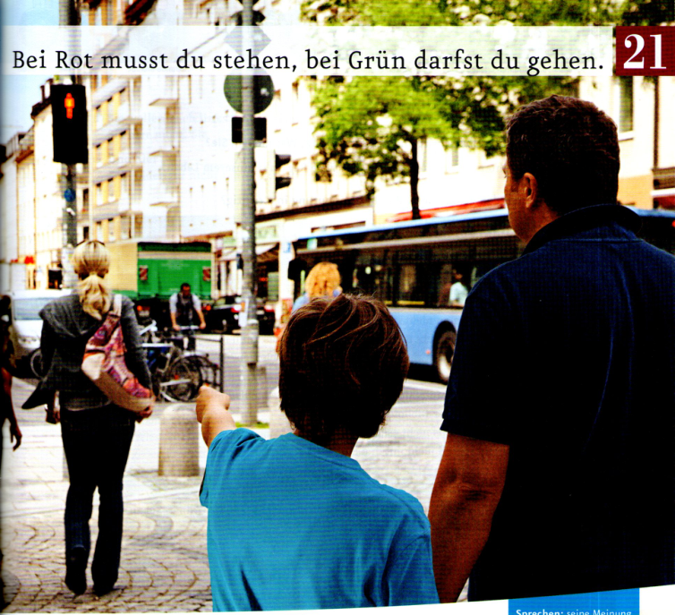
Was passiert hier? Erzählen Sie.
... als Fußgänger?
... als Fahrradfahrer?
... als Autofahrer?
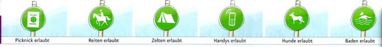
aLesen Sie nur die Überschrift und den ersten Satz. Was meinen Sie?
bLesen Sie nun den ganzen Text. War Ihre Vermutung in a richtig?
Regeln, Regeln, Regeln ...
... unser Leben ist voller Regeln.
Muss man denn wirklich ALLES regeln?
cLesen Sie noch einmal. Welches Schild passt zu welchem Satz in b? Ordnen Sie zu. Hilfe finden Sie im Bildlexikon.
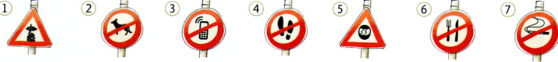
| dürfen | müssen | |
|---|---|---|
| ich | darf | muss |
| du | darfst | musst |
| er/es/sie | darf | muss |
| wir | dürfen | müssen |
| ihr | dürft | müsst |
| sie/Sie | dürfen | müssen |
Ergänzen Sie in der richtigen Form.
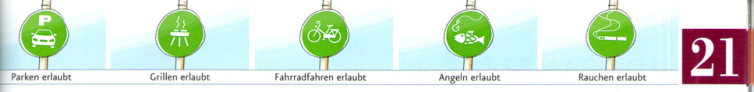
| ☹ | ☺ |
|---|---|
| falsch / nicht in Ordnung | richtig / in Ordnung |
| nicht so / gar nicht gut | nicht (so) schlimm |
| (sehr) gefährlich | nicht (so) gefährlich |
Sehen Sie das Bild an und sprechen Sie. Was darf man hier (nicht)? Was muss man? Hilfe finden Sie auch im Bildlexikon.
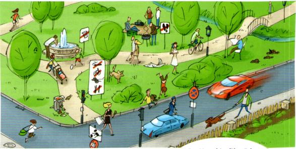
aSie leben in Glückstadt. Arbeiten Sie in Gruppen und bestimmen Sie die Regeln für Ihre Stadt. Was darf man (nicht)? Was muss man? Machen Sie ein Plakat.
| Das darf man nicht | Das darf man | Das muss man |
|---|---|---|
| zu viel arbeiten vor acht Uhr aufstehen | immer Partys feiern | jeden Monat eine Woche Urlaub machen |
bStellen Sie den anderen Gruppen Ihre Stadt vor. Stimmen Sie ab: In welcher Stadt möchten Sie leben?
| dürfen | müssen | |
|---|---|---|
| ich | darf | muss |
| du | darfst | musst |
| er/es/sie | darf | muss |
| wir | dürfen | müssen |
| ihr | dürft | müsst |
| sie/Sie | dürfen | müssen |
| ☹ | ☺ |
|---|---|
| falsch / nicht in Ordnung | richtig / in Ordnung |
| nicht so / gar nicht gut | nicht (so) schlimm |
| (sehr) gefährlich | nicht (so) gefährlich |
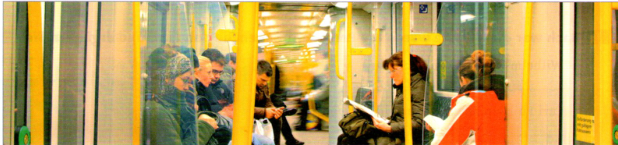
Es ist ruhig im U-Bahn-Waggon. Die meisten Fahrgäste sehen ziemlich müde aus. Wer sind die Leute? Woher kommen sie? Wohin fahren sie? Ich hole das Mikro aus der Tasche und schalte mein Aufnahmegerät ein:
„Entschuldigung? Darf ich mal was fragen?“
Mein Name ist Adem Yilmaz. Ich bin 28 Jahre alt und arbeite in der Universitätsklinik als Krankenpfleger. Gerade komme ich von der Arbeit. Der Nachtdienst beginnt pünktlich um halb zehn Uhr abends: Die Kollegen vom Spätdienst wollen nach Hause. Vorher informieren sie uns über die Situation auf der Station. Wir müssen dann alle zwei Stunden nach den Patienten sehen. Manche bekommen Medikamente, manche muss man von einer Seite auf die andere legen, die frisch Operierten muss man besonders genau kontrollieren. Aber auch sonst gibt es viel Arbeit: man muss Pflegeberichte schreiben, man muss alles sauber halten und so weiter. Von halb zwei bis zwei haben wir Pause. Um diese Zeit bin ich immer total müde. Dann sag ich mir: Junge, schlaf bloß nicht ein! Naja, gleich bin ich zu Hause. Dort darf ich schlafen.
Ich bin Marlies Kretschmann, 34 Jahre alt und Polizeibeamtin. Gerade habe ich meinen Sohn Jonas in den Kindergarten gebracht. Jetzt bin ich auf dem Weg zur Arbeit. Unser Frühdienst beginnt normalerweise um sechs Uhr, aber diese Woche muss ich erst um sieben Uhr anfangen. Ich bin Polizeiberufseinsteigerin und arbeite in der Dienststelle und draußen im Streifendienst. In der Dienststelle muss man viel Schreibarbeit machen. Im Streifendienst ist man mit einem Kollegen oder einer Kollegin im Stadtteil unterwegs. Diese Arbeit gefällt mir besonders gut. Da lernt man das Leben und die Menschen kennen. Manche Kollegen kommen in Uniform zum Dienst, ich ziehe mich erst auf der Wache um. Den Frühdienst mag ich besonders gern. Da habe ich um 13 Uhr schon Dienstschluss und kann Jonas vom Kindergarten abholen.
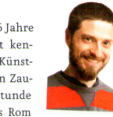
Ich heiße Markus Hirsch, bin 46 Jahre alt und selbstständig. Vielleicht kennen Sie mich ja unter meinem Künstlernamen Argor Zafran. Ich bin Zauberer. Vor etwa einer halben Stunde bin ich mit dem Nachtzug aus Rom am Hauptbahnhof angekommen. Um acht Uhr muss ich im Messezentrum sein. Dort soll ich ab 9 Uhr auf dem „7. Europäischen Magier- und Illusionistentreffen“ meine neue Show vorstellen. Danach muss ich gleich weiter zum Flughafen. Um 12:50 Uhr startet mein Flugzeug nach Rotterdam. Dort checke ich heute Nachmittag auf der „Lady Amanda“ ein. Das ist ein Luxus-Schiff und mit dem mache ich eine Fahrt in die Karibik. Ich muss nur dreimal im Showprogramm mitmachen. Der Rest ist für mich Urlaub. Und dafür bekomme ich auch noch Geld! Herrlich!Machen Sie Notizen zu den Fragen in 1 und erzählen Sie.
Die Filme sind in den bereitgestellten Dateien nicht enthalten. Notizen bleiben möglich; keine unbestätigten Lösungen.
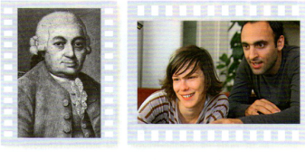
Sehen Sie die Reportage und kreuzen Sie an.
| Ihre Antwort | |
|---|---|
| a Linus soll ... mitbringen. | |
| b Linus hilft seiner Oma. | |
| c Die Oma möchte ... | |
| d Linus soll ... |
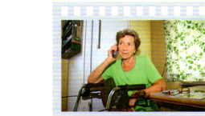
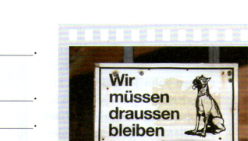
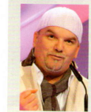
DJ Ötzi (eigentlich Gerhard Friedle) ist Entertainer und Musiker. Er kommt aus Österreich und ist am 7. Januar 1971 in St. Johann in Tirol geboren. Der Schlagersänger wächst bei seiner Großmutter auf und macht zunächst eine Ausbildung als Koch. Mitte der 90er Jahre entdeckt man ihn bei einem Karaoke-Wettbewerb. Danach arbeitet er als Animateur, Sänger und DJ in Österreich, auf Mallorca und in der Türkei. 1999 wird DJ Ötzi mit dem Hit „Anton aus Tirol“ im deutschsprachigen Raum bekannt. Der internationale Durchbruch folgt im Jahr 2000 mit dem Coversong „Hey Babe“. Über 16 Millionen CDs hat der Sänger weltweit verkauft. Erkennen kann man DJ Ötzi an seiner weißen Mütze. Nur selten sieht man ihn ohne sie. Inzwischen tragen auch viele Fans weiße Strickmützen. Nicht nur der Erfolg, auch die Familie ist DJ Ötzi wichtig. 2001 heiratet er die Musikmanagerin Sonja Kein und 2002 kommt die gemeinsame Tochter Lisa-Marie zur Welt.
aWählen Sie einen Prominenten aus den deutschsprachigen Ländern. Schreiben Sie ein Porträt wie in 1 und suchen Sie auch ein passendes Foto.
bAlle Kursteilnehmer hängen ihre Fotos an eine Wand. Präsentieren Sie Ihre Person im Kurs. Können die anderen Kursteilnehmer das richtige Foto finden?
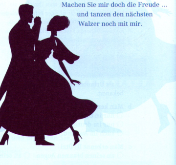
Vergleichen Sie dann mit Ihrer Partnerin / Ihrem Partner.
| um etwas bitten | auf Bitten reagieren | sich bedanken | auf Dank reagieren |
|---|---|---|---|
| Entschuldigung? | Natürlich. | Sehr freundlich! | Bitte! |
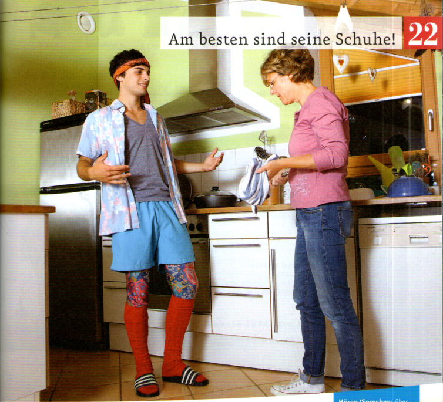
aSehen Sie das Foto an und hören Sie. Was ist richtig? Kreuzen Sie an.
bWie finden Sie Fabians Kleidung? Wohin geht Fabian? Was meinen Sie?
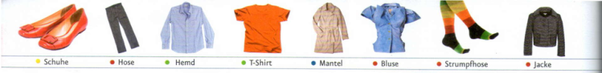
aWas kaufen Sie wie oft? Sehen Sie ins Bildlexikon / ins Wörterbuch und notieren Sie.
| oft | manchmal | (fast) nie |
|---|---|---|
| Röcke |
bRatespiel: Alle schließen die Augen. Eine/r wählt eine Person und beschreibt: Was hat diese Person an? Die anderen raten.
aWas ist richtig? Hören und markieren Sie.
bHören Sie noch einmal und ergänzen Sie die Namen unter dem Foto.
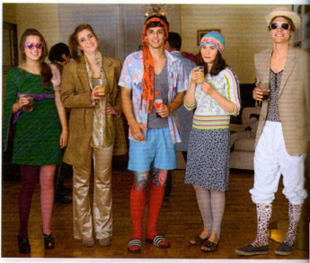
aWie finden Maike und Elena die Kostüme? Lesen Sie die Tabelle und ergänzen Sie.
bSchreiben Sie Sätze zu dem Foto in 3. Wie viele Sätze finden Sie in 5 Minuten?
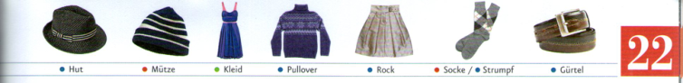
aArbeiten Sie in Gruppen und lesen Sie die Texte im Forum. Schreiben Sie drei Fragen und geben Sie sie einer anderen Gruppe. Sie beantwortet die Fragen.
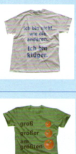
Ich habe nicht nur ein Lieblings-T-Shirt.
Aber dieses hier finde ich zurzeit am lustigsten. Wie ihr sehen könnt, ist es schon ziemlich alt. Ich habe es viel getragen und natürlich auch oft gewaschen. Aber es gefällt mir immer noch total gut. Und am meisten mag ich an dem T-Shirt: In ihm habe ich meine Freundin kennengelernt.
Tom: Klasse, Fred! Dein T-Shirt ist ja noch älter als das von Marco! Und das Foto ist cool und die Farbe auch noch schöner als bei Marco ;-).
8. Juli um 19:35bLesen Sie die Texte noch einmal und markieren Sie die Adjektive. Ergänzen Sie dann.
aEntwerfen Sie zu zweit Ihr eigenes T-Shirt. Wie sieht es aus? Schreiben und malen Sie.
bMachen Sie eine Ausstellung im Kurs. Welches T-Shirt gefällt Ihnen am besten?
aHören Sie noch einmal und ergänzen Sie. Sprechen Sie dann nach und achten Sie auf die Betonung.
bSehen Sie in eine Zeitschrift oder einen Katalog. Wie finden Sie die Kleidung?
| Positiv + | Komparativ ++ | Superlativ +++ |
|---|---|---|
| gut | besser | am besten |
| gern | lieber | am liebsten |
| viel | mehr | am meisten |
| lustig | lustiger | am lustigsten |
| schön | schöner | am schönsten |
| alt | älter | am ältesten |
| groß | größer | am größten |
| klug | klüger | am klügsten |
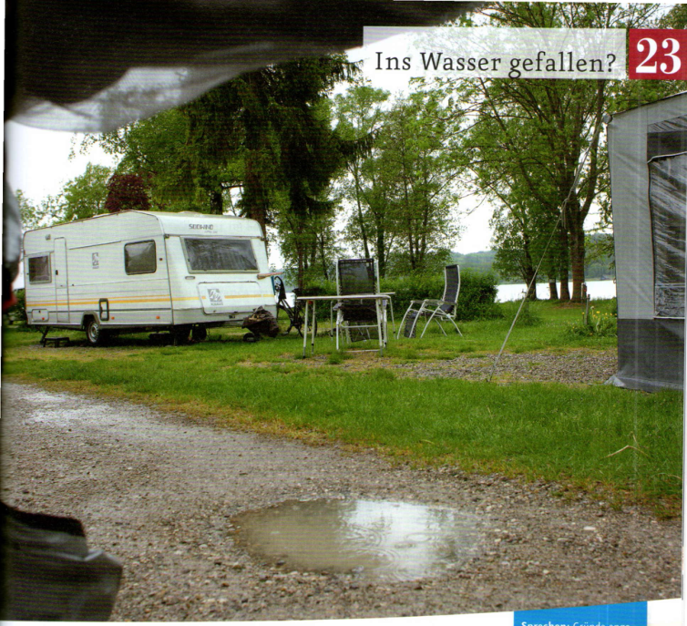
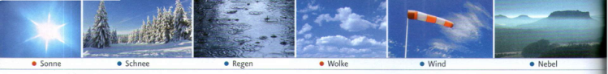
aSehen Sie ins Bildlexikon und notieren Sie die passenden Nomen.
bHören Sie. Wie ist das Wetter? Notieren und vergleichen Sie.
aWelches Foto passt? Überfliegen Sie die Texte und ordnen Sie zu.
Klingt ziemlich uninteressant, nicht? So was möchten wir selbst erleben, aber von anderen Leuten hören oder lesen wollen wir es nicht. Und Urlaubsfotos vom Super-Badestrand möchten wir bitte auch nicht sehen. Warum auch? Das Internet ist ja schon voll davon.
In diesem Blog sammle ich Bilder und Texte über „Problemurlaube“. Ist bei Dir auch schon mal ein Urlaub so richtig ins Wasser gefallen? Dann mach mit und schick mir Deinen Text (nicht mehr als 100 Wörter und am besten mit Foto!).
A) Der Winter in Österreich war mal wieder viel zu lang und zu hart. Wir hatten Lust auf Frühling. Also haben wir uns ins Wohnmobil gesetzt und sind losgefahren. Unser Ziel war Südtirol, denn dort ist es im März oft schon so warm wie bei uns im Mai. Am ersten Tag war alles perfekt: tolles Wetter, der Himmel wolkenlos, Temperaturen zwischen 18 und 22 Grad. Bis zum späten Nachmittag haben wir auf unseren Campingstühlen in der Sonne gesessen. Am nächsten Morgen wache ich auf und denke: „Warum ist es so kalt hier?“ Ich öffne die Tür und habe die Antwort: 15 Zentimeter Neuschnee bei minus zwei Grad. „Tja“ habe ich gedacht, „da sind wir wohl nicht weit genug nach Süden gefahren“. Tom und Hanna aus Vöcklabruck
B) Unser Sommerurlaub im Schwarzwald war unglaublich. Wir vergessen ihn sicher nie. Wir hatten eine Ferienwohnung in einem schönen alten Haus. Unsere Zimmer waren ganz oben, direkt unter dem Dach. Leider waren wir nur ein paar Stunden in der Wohnung, denn dann ist das Unwetter gekommen: zuerst nur Gewitter mit Regen, aber dann ein Sturm mit bis zu 160 km/h Geschwindigkeit. Es war furchtbar. In nur fünf Minuten war das Hausdach total kaputt. Zum Glück haben wir noch am selben Tag eine andere Wohnung gefunden. Familie Encke aus Köln
C) Letztes Jahr sind wir zum Segeln an die Ostsee gefahren. Es war nur ein Kurzurlaub, aber es war wunderbar, denn wir hatten ein Traumwetter mit viel Sonne und Wind. Dieses Jahr waren wir wieder dort, hatten aber leider Pech: fünf Tage lang kein bisschen Wind, keine Sonne, nur Nebel - alles grau und farblos. Und das bei gerade mal sieben Grad! Zum Glück hatten wir warme Pullover und einen Reiseführer mit (ein paar) brauchbaren Tipps dabei. Nächstes Jahr fahren wir lieber wieder in den Süden, ans Mittelmeer, denn dort ist es auch spät im Herbst noch schön warm. Beat, Karla und Franca aus Luzern
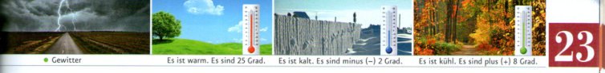
bLesen Sie den Blog noch einmal. Was ist richtig? Kreuzen Sie an.
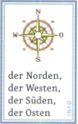
aOrdnen Sie zu und vergleichen Sie dann mit den Texten A-C.
bEtwas begründen: Arbeiten Sie zu zweit. Sie arbeiten auf Seite 86. Ihre Partnerin / Ihr Partner arbeitet auf Seite 88.
aAn welches Wetter denken Sie? Hören Sie und notieren Sie Stichwörter.
| 1 | 2 | 3 | 4 | |
|---|---|---|---|---|
| Wie ist das Wetter? | kalt, Schnee | |||
| Was machen Sie gerade? |
bWelche Melodie / Welcher Rhythmus gefällt Ihnen am besten? Erzählen Sie.
aHannes hat Ihnen aus dem Urlaub eine Postkarte geschrieben. Lesen Sie die Karte und machen Sie Notizen.
| Hannes | ich | |
|---|---|---|
| Ort? | Korfu | |
| Wetter? | ||
| Aktivitäten? | Ausflüge, ... |
bJetzt sind Sie im Urlaub. Machen Sie Notizen zu den Fragen in a.
cSchreiben Sie nun eine Karte an Hannes. Denken Sie auch an die Anrede und die Grußformel.
dLesen Sie Ihre Karte noch einmal und überprüfen Sie.
| Wortbildung | Nomen | Adjektiv |
|---|---|---|
| Nomen + -los | die Wolken | wolkenlos (= ohne Wolken) |
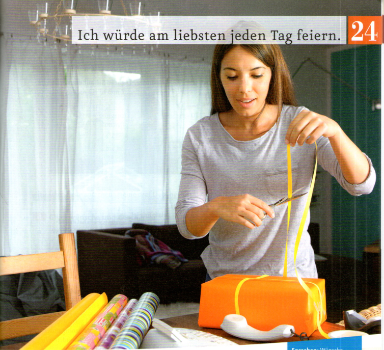
aWas ist richtig? Sehen Sie das Foto an, hören Sie und kreuzen Sie an.
bHören Sie noch einmal und korrigieren Sie die Sätze.
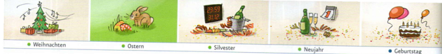
aÜberfliegen Sie die Texte. Welches Foto passt? Was meinen Sie? (Achten Sie auf die Kleidung.)
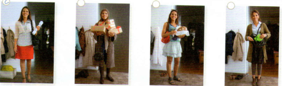
bLesen Sie die Texte noch einmal und kreuzen Sie an.
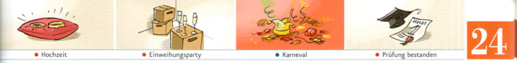
aMarkieren Sie das Datum in den Texten in 2. Ergänzen Sie dann in der passenden Form. Hilfe finden Sie in den Tabellen unten.
bÜber Feste sprechen: meine drei Lieblingsfeste. Arbeiten Sie zu dritt auf Seite 87.
aWelches Fest passt zu den Glückwünschen? Sehen Sie ins Bildlexikon und notieren Sie.
| Glückwunsch | Fest(e) |
|---|---|
| 1 Herzlichen Glückwunsch! | Geburtstag, Hochzeit, ... |
| 2 Gutes/Frohes neues Jahr! | |
| 3 Frohe Weihnachten! | |
| 4 Gut gemacht! | |
| 5 Alles Gute! |
bWas schenken/bekommen Sie gern? Sprechen Sie.
aWas bedeuten die Sätze? Kreuzen Sie an.
bArbeiten Sie zu dritt. Was würden Sie am liebsten jeden Tag machen? Notieren und erzählen Sie.
| ich | Maria | Fatima |
|---|---|---|
| spät aufstehen, Geld gewinnen, ... |
aArbeiten Sie in Gruppen. Wählen Sie ein Fest aus Deutschland / Österreich / der Schweiz und ergänzen Sie den Fragebogen. Recherchieren Sie im Internet.
| Frage | Beispiel | Unser Fest |
|---|---|---|
| Wie heißt das Fest? | Silvester | |
| Wann ist das Fest? | am 31.12. | |
| Mit wem feiert man? | mit Freunden, Bekannten oder Verwandten | |
| Wo feiert man? | zu Hause, bei Freunden, in Diskotheken, draußen ... | |
| Was trinkt/isst man? | Sekt um 24.00 Uhr, ... | |
| Was macht man? | tanzen, gemeinsam essen, ... | |
| Was ist noch wichtig? | das Feuerwerk um 24 Uhr, ... |
bErzählen Sie im Kurs.
| 1.-19.: + -te | ab 20.: + -ste |
|---|---|
| der erste | der zwanzigste |
| der zweite | der einundzwanzigste |
| der dritte | ... |
| der vierte | |
| der fünfte | |
| der sechste | |
| der siebte | |
| der achte | |
| der neunte |
| Wünsche: Konjunktiv II | |
|---|---|
| ich | würde |
| du | würdest |
| er/es/sie | würde gern mit dir feiern |
| wir | würden |
| ihr | würdet |
| sie/Sie | würden |
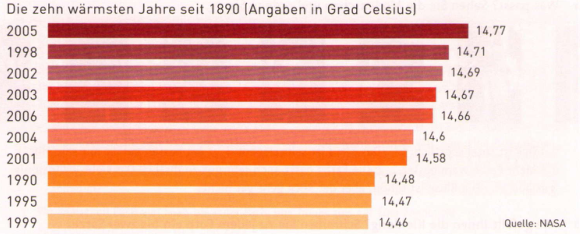
Was sagt schon so ein Diagramm? Gar nichts. Klimawandel hat es immer wieder gegeben. Das ist wirklich nichts Besonderes. Auch früher war es mal heißer und mal kälter. Auch früher hat es mal mehr geregnet und mal weniger. Das ist total natürlich. Denken wir bloß an die Eiszeit: Damals ist kein Mensch mit dem Auto gefahren, oder? Und doch ist es auf der Welt zuerst sehr viel kälter geworden und dann, nach ein paar Tausend Jahren, wieder sehr viel wärmer. Die meisten Menschen machen sich jetzt Sorgen ums Klima und um die Zukunft. Das finde ich total falsch, denn in Wirklichkeit geht es hier doch nur um Geld und Politik und nicht um die Wissenschaft. Da sind wahnsinnig viele Interessen im Spiel. Ich habe jedenfalls keine Angst vor dem Klimawandel, denn wir Menschen können mit jedem Wetter gut leben.
In dem Diagramm geht es um einen Zeitraum von 125 Jahren (1890 bis 2005). Und die zehn wärmsten Jahre sind genau in den letzten 20 Jahren. Wer mag da noch an einen Zufall glauben? Nein, es ist total klar: Der Klimawandel ist eine Tatsache. Und wir Menschen haben ihn gemacht und machen ihn jeden Tag schlimmer. Es gibt auch noch viele andere Daten über die Klimaveränderung auf unserem Planeten und alle sagen leider genau das Gleiche: Der Klimawandel kommt viel schneller als wir gedacht haben und er ist viel stärker als wir befürchtet haben. Was sollen wir tun? Ganz einfach: Wir dürfen nicht mehr so weiterleben wie in den vergangenen 150 Jahren, denn sonst machen wir unsere Welt kaputt.
Die Filmdateien sind nicht enthalten. Diese Aufgaben können ohne Film nicht verlässlich geprüft werden.
aWas passt? Sehen Sie die Modenschau und ordnen Sie zu.
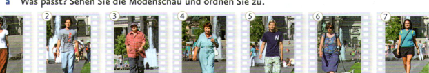
bWie gefällt Ihnen die Kleidung? Schreiben Sie zu jedem Foto ein bis zwei Sätze.
Sehen Sie die Reportage und kreuzen Sie an.
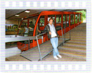
aSehen Sie die Reportage und ergänzen Sie.
bWelche Wünsche haben Lilian und Oliver? Kreuzen Sie an.
| Lilian | Oliver | |
|---|---|---|
| Autoscooter fahren | ||
| über den Jahrmarkt gehen und gucken | ||
| etwas essen | ||
| schießen |
- Wie sieht die Einladung zu Eurer Party aus?
- Wie dekoriert Ihr den Raum am besten?
- Welche Kleidung passt zum Motto?
- Was könnt Ihr zu essen und zu trinken anbieten?
- Welche Musik gibt es zu Eurem Motto?
- Und nicht zuletzt: Was wäre eine Party ohne Programm? Ihr findet hier auch noch viele lustige Spielvorschläge!
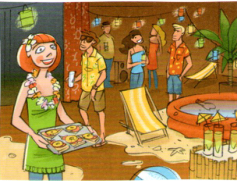
Die Einladung bringt Ihr den Gästen am besten in einer Flaschenpost vorbei oder Ihr schickt ihnen einen Brief und gebt etwas Sand in den Umschlag. Sand ist bei einer Strand-Party natürlich auch ganz wichtig für die Dekoration: Den Party-Raum könnt Ihr mit Sand dekorieren und Liegestühle aufstellen. Und nicht vergessen: ein Planschbecken darf nicht fehlen. Bei einer Strand-Motto-Party könnt Ihr Bikinis, Badeanzüge oder Badehosen anziehen.Essen und Getränke sollten exotisch sein: Bietet Fruchtcocktails zu trinken und Toast Hawaii zu essen an. Das ist nicht teuer und schmeckt jedem. Darf es ein bisschen teurer sein? Dann macht ein Fischbuffet. Als Musik passt Salsa - das sorgt für eine tolle Stimmung. Ein Luftballon-Darts ist das perfekte Spiel für Strand-Partys.
| Notizen | Notizen | ||
|---|---|---|---|
| Einladung | Flaschenpost, | Essen/Getränke | |
| Dekoration | Musik | ||
| Kleidung | Programm |
aArbeiten Sie in Gruppen: Wählen Sie ein Motto und sammeln Sie Ideen zu Dekoration, Kleidung, Essen/Getränken, Musik, Programm.
bPräsentieren Sie Ihre Ideen im Kurs und stimmen Sie ab.
cWählen Sie ein Datum aus und feiern Sie Ihre Motto-Party im Kurs.
Selbstkontrolle mit dem Original-Lied. Kein unbestätigter Lösungsschlüssel.
Lektion 13 · 6
Bauen Sie „Bilder“. Die anderen beschreiben.
Variante: Beschreiben Sie „Bilder“. Die anderen bauen sie.
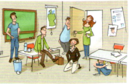
Lektion 15 · 5c
Fragen Sie Ihre Partnerin / Ihren Partner und ergänzen Sie die fehlenden Informationen.
| Urlaubsort - wo? | Was gefällt ...? | |
|---|---|---|
| Peter | Frankreich | |
| Saskia | Schweiz | die Berge |
| Familie Müller | ||
| Frau Neumann | Paris | die Geschäfte |
| Herr Hansen | ||
| Silvia und Andre | Schweden | das Meer |
| Len | ||
| Anna | Kanada | die Menschen |
| Sie | ||
| Ihre Partnerin / Ihr Partner |
Lektion 14 · 7
Sehen Sie die Bilder an. Was meinen Sie: Was gehört Sonja, was Peter? Beschreiben Sie die Gegenstände.
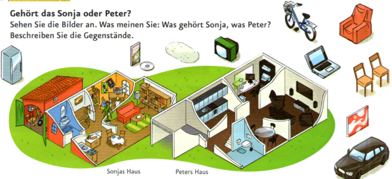
Lektion 18 · 6
aArbeiten Sie zu dritt und schreiben Sie Fragen.
bBefragen Sie eine Person aus einer anderen Gruppe und notieren Sie die Antworten.
cErzählen Sie in Ihrer Gruppe von dem Ergebnis.
Lektion 14 · 9
aWie sieht Ihr Traumhaus aus? Kreuzen Sie an oder ergänzen Sie.
| Wählen oder ergänzen Sie | |
|---|---|
| Das Haus steht ... | |
| Vor dem Haus ist ... | |
| Im Garten gibt es ... | |
| Das Haus ist ... | |
| Es hat ... | |
| Neben dem Haus steht ... | |
| Ich wohne dort ... | |
| Was ist Ihnen noch wichtig? |
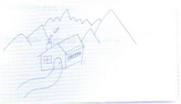
bBeschreiben Sie Ihr Haus. Ihre Partnerin / Ihr Partner zeichnet.
cMachen Sie eine Ausstellung. Welches Haus gefällt Ihnen am besten?
Lektion 15 · 5c
Fragen Sie Ihre Partnerin / Ihren Partner und ergänzen Sie die fehlenden Informationen.
| Urlaubsort - wo? | Was gefällt ...? | |
|---|---|---|
| Peter | Frankreich | die Schlösser |
| Saskia | Schweiz | |
| Familie Müller | Italien | die Märkte |
| Frau Neumann | ||
| Herr Hansen | Wien | der Dom |
| Silvia und Andre | ||
| Len | Athen | die Cafés |
| Anna | ||
| Sie | ||
| Ihre Partnerin / Ihr Partner |
Lektion 16 · 6
Wählen Sie zu zweit eine Situation und spielen Sie Gespräche.
Variante: Denken Sie sich eine neue Situation aus.
| Gast | Angestellte/r im Hotel | |
|---|---|---|
| Situation 1 | Die Heizung funktioniert nicht. | Sie schicken einen Techniker. Wann hat der Techniker Zeit? Das wissen Sie nicht. |
| Situation 2 | Es gibt keine Handtücher. | Sie sagen dem Zimmermädchen Bescheid. Das Zimmermädchen bringt sofort Handtücher in das Zimmer. |
| Situation 3 | Der Fernseher ist kaputt. | Sie kümmern sich darum. Der Techniker kommt heute Nachmittag. |
Lektion 16 · 8
aLesen Sie zu zweit Carolas Kalender und ergänzen Sie.
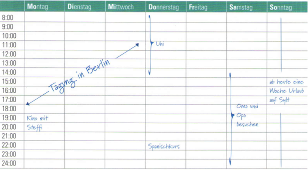
bSie möchten den Termin mit Steffi verschieben. Schreiben Sie gemeinsam eine E-Mail.
| Termine verschieben | Pläne beschreiben | Alternativen vorschlagen |
|---|---|---|
| Ich kann leider doch nicht ins Kino gehen / kommen. Ich möchte den Termin verschieben. Können wir den Termin verschieben? | Von ... bis ... bin ich in Berlin. Vor/Nach dem Spanischkurs / der Uni ... Ab ... bin ich für ... im Urlaub. In ... bin ich aus dem Urlaub zurück. | Ich kann am ... Am ... habe ich Zeit. Passt Dir das? / Passt es dir am ...? Wollen wir am ... ins Kino gehen? Hast Du Lust? |
Lektion 17 · 4b
aWas nehmen Sie immer/nie in den Urlaub mit? Notieren Sie jeweils drei Gegenstände. Arbeiten Sie auch mit dem Wörterbuch.
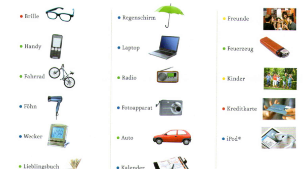
| immer: | nie: |
|---|---|
bSchreiben Sie.
cArbeiten Sie in Gruppen und erzählen Sie.
Lektion 19 · 5
aWie war Simone vor 20 Jahren? Wie ist sie heute? Sprechen Sie mit Ihrer Partnerin / Ihrem Partner und notieren Sie.
| vor 20 Jahren | heute | |
|---|---|---|
| Beruf: | Sekretärin | |
| Familie: | ledig | |
| Lebt in: | Stuttgart | |
| Hobbys: | Musik hören | |
| Aussehen: | blonde, kurze Haare, Brille |
bWie war Klaus vor 20 Jahren? Wie ist er heute? Sprechen Sie mit Ihrer Partnerin / Ihrem Partner und notieren Sie.
| vor 20 Jahren | heute | |
|---|---|---|
| Beruf: | Bürokaufmann | Musiker |
| Familie: | geschieden | |
| Lebt in: | Neu Delhi | |
| Hobbys: | kochen, Fahrrad fahren | |
| Aussehen: | lange Haare, Bart |
cUnd Sie? Ergänzen Sie und sprechen Sie mit Ihrer Partnerin / Ihrem Partner.
| Sie | vor 10 Jahren | heute |
|---|---|---|
| Beruf/Schule: | ||
| Familie: | ||
| Lebe in: | ||
| Hobbys: | ||
| Aussehen: |
Lektion 17 · 6b
aArbeiten Sie mit dem Wörterbuch und notieren Sie.
| unbedingt noch | auf keinen Fall | |
|---|---|---|
| Was willst du beruflich machen? | ||
| Welche Pläne/Wünsche hast du für deine Familie? | ||
| Welche Pläne/Wünsche hast du für deine Freizeit? | ||
| Was willst du lernen? | ||
| Was willst du im Urlaub machen? | ||
| Du hast viel Geld. Was willst du kaufen? |
bArbeiten Sie in Gruppen und erzählen Sie. Haben Sie etwas gemeinsam?
Lektion 18 · 3b
Lesen Sie die Beiträge im Gesundheitsforum. Arbeiten Sie zu zweit und schreiben Sie zwei Ratschläge zu jedem Beitrag. Hilfe finden Sie im Bildlexikon.
Lektion 20 · 8
Sie kommen aus dem Urlaub zurück. Keiner hat aufgeräumt!
aSehen Sie das Bild an und schreiben Sie zu zweit Ihrer Mitbewohnerin / Ihrem Mitbewohner fünf Sätze. Was soll sie/er tun?
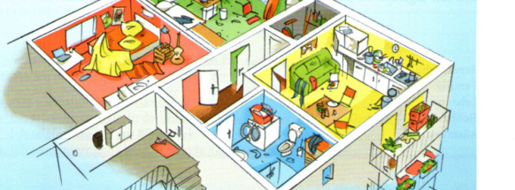
bTauschen Sie Ihre Sätze mit einem anderen Paar. Korrigieren Sie gegenseitig Ihre Sätze.
Lektion 19 · 5
aWie war Simone vor 20 Jahren? Wie ist sie heute? Sprechen Sie mit Ihrer Partnerin / Ihrem Partner und notieren Sie.
| vor 20 Jahren | heute | |
|---|---|---|
| Beruf: | Sekretärin | Yoga-Lehrerin |
| Familie: | geschieden | |
| Lebt in: | Innsbruck | |
| Hobbys: | malen, spazieren gehen | |
| Aussehen: | lange, braune Haare / keine Brille |
bWie war Klaus vor 20 Jahren? Wie ist er heute? Sprechen Sie mit Ihrer Partnerin / Ihrem Partner und notieren Sie.
| vor 20 Jahren | heute | |
|---|---|---|
| Beruf: | Bürokaufmann | Musiker |
| Familie: | verheiratet | |
| Lebt in: | Luzern | |
| Hobbys: | tanzen | |
| Aussehen: | kurze Haare, kein Bart |
cUnd Sie? Ergänzen Sie und sprechen Sie mit Ihrer Partnerin / Ihrem Partner.
| Sie | vor 10 Jahren | heute |
|---|---|---|
| Beruf/Schule: | ||
| Familie: | ||
| Lebe in: | ||
| Hobbys: | ||
| Aussehen: |
Lektion 21 · 7
aLesen Sie den Fragebogen. Was machen Sie in den Situationen? Notieren Sie.
bWas meinen Sie? Wie reagiert Ihre Partnerin / Ihr Partner? Notieren Sie.
Variante: Denken Sie sich weitere Situationen aus.
| Mal ehrlich? Welche Regeln akzeptieren Sie? | Ich | Meine Partnerin / Mein Partner |
|---|---|---|
| Situation 1 Sie sind in einer Bibliothek. Über Ihnen ist dieses Schild: 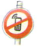 Ihr Handy klingelt. Was machen Sie? 1) Ich mache es sofort aus. 2) Ich telefoniere ganz leise. 3) ... | telefoniere vor der Bibliothek | telefoniert ganz leise |
| Situation 2 Sie wollen heute Abend mit Freunden am See grillen und haben auch schon alles gekauft: Würste, Salate ... Am See sehen Sie dann aber dieses Schild: GRILLEN VERBOTEN! Was machen Sie? 1) Sie grillen. Für Sie ist das kein Problem. 2) Sie grillen nicht. Schade! 3) ... | ||
| Situation 3 Sie sind im Urlaub und wollen unbedingt im Meer baden. Leider sehen Sie am Meer dieses Schild: BADEN VERBOTEN! Was machen Sie? 1) Natürlich bade ich! 2) Ich bade nicht. Vielleicht gibt es ja Haie. 3) ... |
cSprechen Sie mit Ihrer Partnerin / Ihrem Partner und vergleichen Sie. Haben Sie richtig vermutet?
Lektion 22 · 7
aMachen Sie Notizen zu den Fragen.
| Notizen | |
|---|---|
| Was gefällt mir an dem Kleidungsstück am besten? | |
| Wo habe ich es gekauft? | |
| War es ein Geschenk? | |
| Wie lange habe ich es schon? | |
| Wann habe ich es zuletzt angezogen? | |
| Was möchte ich noch erzählen? |
bMachen Sie ein Plakat. Machen Sie ein Foto von Ihrem Lieblings-Kleidungsstück und schreiben Sie einen Text.
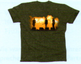
Lektion 23 · 5b
Ergänzen Sie Ihre Spalte und fragen Sie dann Ihre Partnerin / Ihren Partner.
| Celine | Malte | Ich | Meine Partnerin / Mein Partner | |
|---|---|---|---|---|
| Hatte ... einen schönen Urlaub? | ☺ Wetter war wunderbar | ☹ Wetter war schlecht | ||
| War ... gestern im Restaurant? | ☹ das ist zu teuer | |||
| War ... letztes Wochenende im Kino? | ☹ geht lieber ins Theater | |||
| Hat ... gestern Hausaufgaben gemacht? | ☹ hatte keine Zeit | |||
| Hatte ... gestern gute Laune? | ☺ hat nicht gearbeitet | |||
| Hat ... letzte Woche gearbeitet? | ☹ hatte Urlaub |
Lektion 24 · 3b
aWas feiern Sie gern? Notieren Sie. Hilfe finden Sie im Bildlexikon und im Wörterbuch.
| Meine Lieblingsfeste | Wann? | Was mache ich? |
|---|---|---|
| mein Geburtstag | 15.06. | Party, tanzen ... |
bArbeiten Sie zu dritt. Erzählen Sie.
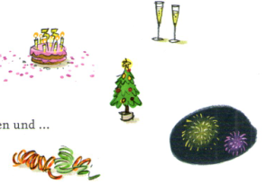
Lektion 24 · 6
Notieren Sie Stichwörter und fragen Sie anschließend Ihre Partnerin / Ihren Partner.
| Ich | Meine Partnerin / Mein Partner | |
|---|---|---|
| an meinem nächsten Geburtstag | eine Reise machen, nach Indien fahren, mit meiner Freundin ... | Party in Las Vegas ... |
| nach der Deutschprüfung | ||
| im nächsten Urlaub | ||
| im Sommer | ||
| nächstes Wochenende | ||
| ... |
Lektion 23 · 5b
Ergänzen Sie Ihre Spalte und fragen Sie dann Ihre Partnerin / Ihren Partner.
| Celine | Malte | Ich | Meine Partnerin / Mein Partner | |
|---|---|---|---|---|
| Hatte ... einen schönen Urlaub? | ☺ Wetter war wunderbar | ☹ Wetter war schlecht | ||
| War ... gestern im Restaurant? | ☺ hat nichts im Kühlschrank | |||
| War ... letztes Wochenende im Kino? | ☺ liebt Kinofilme | |||
| Hat ... gestern Hausaufgaben gemacht? | ☹ hatte keine Lust | |||
| Hatte ... gestern gute Laune? | ☺ hat die Prüfung geschafft | |||
| Hat ... letzte Woche gearbeitet? | ☺ ihre Kollegin war krank |